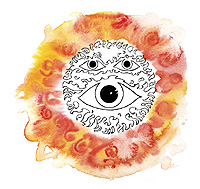
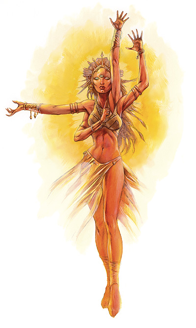

神与半神 第七章 其他宗教
太阳神教
这种原始的对日崇拜，按第一章所给出的分类方法，应当是被归为一种单神宗教。这个神系中唯一的神，太阳神泰亚，是一个同时具有两个不同侧面面的神：她同时是世界的创造者，也是世界的毁灭者；每一个人，不论他的阵营为何，都能清晰地感受她每日是否存在于青空之上。

泰亚（Taiia）
“监察者”，“创造者”，“毁灭者”，“舞者”，“眩目的晖光”。
伟大神力
圣徽：三目日轮
阵营：绝对中立
神职：创造、毁灭、凡物的生与死
信徒：全部
牧师阵营：（创造面）混乱善良、混乱中立、守序善良、守序中立、绝对中立、中立善良；（毁灭面）守序邪恶、混乱中立、守序中立、绝对中立、中立邪恶
领域：（创造面）大气、混乱、土、善良、医疗、知识、秩序、机运、魔法、保护、太阳、旅行；（毁灭面）混乱、死亡、毁灭、邪恶、火、秩序、力量、诡术、战争、水
偏好武器：（创造面）三叉戢；（毁灭面）战斧
太阳泰亚是传说中创造了世界，同时也毁灭了世界，掌管着凡间万物的生，同时也掌管着它们的死的神祗。每天清晨，伴随着太阳的升起，她施舍着她的恩惠，赋予万物生命，维持生灵的存续。而当夜晚降临，太阳落下的一刻，那些违背了她的旨意的人将会尝到惹怒至高神的恶果。泰亚经常以一个具有红色皮肤、金色毛发、以及三只眼睛的和四只手臂的不知种族的老人形象出现于尘世。她的身边会围绕着异常之亮的光环，并且，没有任何黑暗能存在于泰亚的周围。
教义
泰亚是既多情也无情的，她根据人们的阵营公平地给予或者不给予人们以恩典。她的信徒几乎囊括了尘世间所有的凡人：有以太阳神之光辉为揭开黑暗之神秘的虔诚的皈依者；有坚信自己在为太阳神的审判行刑的狂热信徒刺客；以及祈求太阳神慷慨地赐予他们丰收的秋与和煦的冬的卑微农民。不同的人与不同的教派各自强调着太阳神的一个侧面是在其他侧面之上的，是最为重要的。任何人都无法在他们的争论之中总结出一个平衡的、辨证的且真正正确的观点，但这观点却有可能在那些他们所看不起的农民的心中被找到：
泰亚赋予，她也索取。我们按她的意愿活着或死去。植物生长并成熟，或因霜冻而枯萎，这完全取决于她的话语。她在意吗？我不知道。但我却知道，她会听见我在神殿里对她的祷告，并且有时候她会准许我的请求。她，的确活着。最后，她也是死了，她会吞食我的灵魂，并让我成为她的一部分，如果她愿意的话。
太阳神教不仅否认其他神的力量，更否认任何其他神的存在，因此它也禁止人们对任何其他神的崇拜。泰亚的信徒希望死后能成为泰亚的一部分，他们的灵魂将会使她那永恒的火焰更加明亮。而那些不知为何而让泰亚所厌恶的，不愿意接纳的，将被受到永远存留于黑暗，远离她的光辉的严厉惩罚。
神职人员与神殿
信仰和崇拜泰亚的教会分为许多不同的教派，大体上可以按“崇拜泰亚的创造面”和“崇拜泰亚的毁灭面”两大基础信条来分类。这些教会并没有一个明确和权威来判断何者是所谓“正统”，而何者又是所谓“异端”，所以这些教派能够得以共存。它们有些时候合作，而有些时候却视对方为敌。
任何教派的太阳神教神职人员都可以简单地以他们的光头和佩带在显著位置的圣徽被辨认出来。尽管各个教派的圣徽会有些区别，但是全部都包含了“三目日轮”这个意象于其中。比如心眼行僧众的圣徽就是闭上了其中两只眼睛的三目日轮，而净化之焰的圣徽则有四只手臂，握着泰亚的偏好武器。神职人员的义务和任务则因教派的不同而大有区别。
一个崇拜泰亚创造面的教派的牧师将被允许使用泰亚于创造面的力量，而且必须在阵营上符合泰亚创造面的要求。同理，一个崇拜泰亚会面面的教派的牧师也只能使用泰亚于毁灭面的力量，而且也必须在阵营上符合泰亚毁灭面的要求。
太阳神教下面包含着许多子教派，比较重要的几个的如下：
心眼行僧众：这个崇拜泰亚的创造面的教派一直对世人保持着高度的神秘感，它强调自己的神职人员和信徒们应当禁欲，苦修（包括遮住自己的眼睛，自我导盲，清贫的生活，以及绝食），和长时间虔心的祈祷。它认为每一个神职人员和信徒都因该通过这样的试炼来期望达到某一个境界以更清楚地知晓泰亚的存在和她的力量，感受她火焰中的净化之力及她赐予人间的福音和恩典。
净化之焰：由于“泰亚火焰之中的净化之力”，这个崇拜泰亚的毁灭面的教派的和其他崇拜毁灭面的教派有着巨大的差距。这个教派以两件事物为思考核心：预言与审判。净化之焰的很注重培养一种“理解神谕”的能力，他们深信泰亚准许他们梦到或是洞察到她的意志和恩典。尽管如此，他们的这些预言都强调太阳神的暗面，并且，往往包含着泰亚对那些不信者和迷信者的惩戒与审判。他们理解并在凡人间执行这些惩戒与审判，用他们自己的方法和手段——如果有需要或情况所迫的话，包括刺杀和战争。
太阳之路：这个崇拜泰亚创造面的教派以他们的那种奉献式的崇拜为特征，他们不会着重营造人们对泰亚的存在的神秘感，而是培养信徒们对泰亚的爱、信仰和奉献。教派不会要求神职人员或是信徒进行任何特殊的苦修或祈祷，但太阳之路教派的成员必须定期集会来拜神，表达他们的信仰。集会上，人们会快乐的歌唱，并且跳起一种舞步呈一个曲线路径的舞蹈，这象征着太阳每日在天空所走过的路径（也是教派名字的由来）。
暗之忏悔者：这个崇拜泰亚毁灭面的教派在承认和强调泰亚对这个充满原罪的世界的审判这一方面，与净化之焰教派非常的类似。不过，相对于在尘世间执行她的审判，这个教派的成员则认为先要承担起自己的原罪，他们自己愿意被泰亚抛弃。他们经常在被以魔法创造出的黑暗的房间中聚会——他们认为自己可以转移开泰亚对尘世间其他地方的愤怒与不满，并通过自己的行动来找到自己的救赎。

泰亚
20级蛮战士/20级牧师
巨型外位面生物
神格等级：20
生命：20d8+340（外位面生物）+20d12+340（蛮战士）+20d8+340（牧师）（1580hp）
先攻权：+9
速度：110ft
防护等级：78（-2体型，+9敏捷，+20神力，+33天然，+8偏转）
攻击：巨型+5灿烂能量长剑+76/+71/+66/+61近战，巨型+5速度轻连枷+76/+71/+66/+61近战，巨型+5神圣三叉戟+76/+ 71/+66/+61近战，巨型+5邪恶战斧+76/+71/+66/+61近战；或通过法术+72近战接触或+65远程接触。总是得到20的攻击检定。重击瞬杀。
伤害：巨型+5灿烂能量长剑2d8+21/19-20，巨型+5速度轻连枷2d8+13，巨型+5神圣三叉戟2d8+13，巨型+5邪恶战斧2d8+13/*3；或通过法术。总是最大伤害（长剑37点，其他武器29点）。
面宽/可触距离 ：5呎乘10呎/15呎
特殊攻击：领域力量，超凡神圣能力，类法术能力，超度或责退不死生物/每天11次。
特性：神圣免疫，火系免疫，DR55/+4（4/-），快速治疗40，自发性施展神力法术，领悟，交谈，阅读所有语言并直接与20哩内的任何存在交谈，远程沟通，神祗国度，随意无误传送，随意位面传送，快速移动，强力狂暴6次/每天，离奇闪避（不会被夹击，对抗陷阱鉴定+4），SR52，神圣笼罩（20哩，DC37）。
豁免值：坚韧+69，反射+61，意志+60，在豁免时总是得到20
能力：力量43，敏捷28，体质45，智力29，感知26，魅力27
技能：攀爬+76，集中+77，外交+68，医疗+68，隐藏+21，影射+68，胁迫+68，判断方向+68，跳跃+76，知识（奥术）+69，知识（地理）+49，知识（历史）+69，知识（宗教）+79，聆听+70，骑乘（马匹）+49，占卜+69，法术知能+69，侦察+70，游泳+76，野外学识 +68。在判定时总是获得20。
特技：机敏，顺劈砍，躲避，专家，增强顺劈砍，增强多武器格斗，增强冲撞，提升多武器格斗，灵活，多语言，多武器格斗，强力攻击，跳跃攻击，切割，增强专家，武器专注（长剑），武器专注（轻连枷），武器专注（三叉戟），武器专注（战斧），旋风攻击。
神圣免疫：属性伤害，属性吸取，酸，寒冷，即死效果，疾病，粉碎术，电，能量吸取，心智影响效果，瘫痪，毒，睡眠，震慑，改变形态，监禁术，放逐术。
超凡神圣能力：改变形态，改变现实，改变大小，消灭重击Annihilating Strike，制造大型物体，创造物体，神力敏捷，神力创造，神力快速医疗，神力狂暴，能量风暴（任何能量形式），额外领域（毁灭），额外领域（治疗），额外领域（力量），额外领域（旅行），额外领域（战争），额外能量免疫（火），生命礼物，死亡之手，生与死，区域生与死，复生，变形，真实变形。
领域力量：20次/每天死亡之触（被触及者如果生命值在120以下，就会死亡）；20次/每天重击（一次武器攻击攻击+4，伤害+20）；在+1等级上施放医疗法术；20次/每天防护之锁（接触到的物品在下一次鉴定中获得+20的抵抗奖励，持续1小时）；20次/每天力量特技（一轮round内强壮获得+ 20奖励）；20次/每天增强超度；20次/每天自由移动。
类法术能力：尽管泰亚允许她的牧师超过二十个领域，她自身只有以下八个领域的类法术能力：死亡，毁灭，医疗，保护，力量，太阳，旅行，战争。泰亚使用下列能力，相当于30级施法者，除了医疗法术，这时她作为31级施法者。豁免DC 为38+法术等级。Animate dead,antimagic field,astral projection,Bigby's elenched fist,Bigby'crushing hand,Bigby's grasping hand,blade barrier,bull's strength,cause fear,circle of doom,contagion,create greater undead,create undead,cure critical wounds,cure light wounds,cure moderate wounds,cure serious wounds,death knell,death ward,destruction,dimension door,disintegrate,divine power,earthquake,endure elements,expeditious retreat,find the path,fire seeds,fire shield,flame strike,fly,harm,heal,healing circle,heat metal,implosion,inflict critical wounds,inflict light wounds,locate object,magic vestment,magic weapon,mass heal,mind blank,phase door,power word blind,power bord kill,power word stun,prismatic sphere,protection from elements,regenerate,repulsion,righteous might,sanctuary,searing light,shatter,shield other,slay living,spell immunity,spell resistance,spiritual weapon,stoneskin,sunbeam,sunburst,teleport without error,true resurrection,wail of the banshee.
强力狂暴：当泰亚陷入狂暴后会有以下改变：防护等级76，生命值1760，攻击：+79/+74/+69/+64近战；伤害+3奖励；豁免：坚忍+72，意志+63，强壮52，体质51，攀爬+79，跳跃+79，游泳+79，持续23轮，结束后不会疲劳。
神术每日：6/8/8/8/8/7/6/6/6/5 基本DC=18+神术等级。
其他神圣能力
作为一个强大神力，泰亚在任何掷骰中（包括攻击骰，伤害骰，豁免）自动获得最好的结果。她是不死之身。
感知：泰亚可以看见，听见，触摸和嗅到20哩的距离。作为一个标准动作，她能够感知到任何动物，她的信徒，圣迹，与她有关的物体和任何她的名字在一个小时内被说出的地点周围20哩内的一切。她能够立即将她的感知延伸到20个地方。她立即能够在2个地方阻止神格等级等于或者小于她的神的感知力量，时间最长可达 20个小时。
神力感知：泰亚可以在任何创造，诞生和死亡的事件发生之前或之后20个星期内知道这件事。
自动动作：泰亚能够作为一个自由动作使用任何技能，即使她并未掌握那个技能，只要该项任务的DC在30或者30以下。她每轮能够完成20个类似的自由动作。
创造魔法物品：泰亚能够创造任何魔法物品。
进阶职业——泰亚制裁者
泰亚制裁者是“净化之焰”教派的成员。他们忠诚的执行神谕，打击和消灭一切被泰亚所宣判的恶行。 他们敬拜泰亚的破坏者形态，崇拜太阳的强大力量。并相信那会赐予他们正义之怒。
泰亚制裁者通常因为他们特殊的经历而加入这个特殊的行列。在他们当中，有相当一部分都是狂热的牧师，和一些粗暴的巡林客。其他职业，比如战士，僧侣，特别是游荡者也能能很好的担待这个职业，而圣武士和德鲁伊则相当罕见，法师和术士出奇的能很好的胜任这个职业，但是却很少看到他们的身影。有些制裁者甚至还具有刺客职业等级。
NPC泰亚制裁者通常让人感到敬畏。在一个“净化之焰”教派掌权的地区，制裁者们拥有各种折磨“敌人”的手段和特权。一旦这种折磨合法化，那么他们就会用尽所有办法对他们的敌人进行“制裁”。
生命骰：D6
先决条件：
要成为一名泰亚制裁者，角色必须满足以下条件：
阵营：任意非善良
信仰神祉：泰亚
基本攻击加值：+4
技能：知识（宗教）6级
本职技能：
专注（体质），交涉（魅力），收集信息（魅力），平衡（敏捷），威吓（魅力），宗教知识（智力），聆听（感知），潜行（敏捷），搜索（智力），察言观色（感知），法术辨识（智力），侦察（感知）
每级技能点数：6+智力调整值。
职业特性：
武器和防具熟练：在lv1的时候，泰亚制裁者得到任意一项武器熟练专长（简易武器，军用武器或是异种武器）作为额外专长。泰亚制裁者不能得到新的护甲和盾牌的熟练度。
施法能力：泰亚制裁者在第一级的时候，可以得到一些简单神术的施法能力。要施展某一等级的神术，泰亚制裁者的感知属性必须达到10+法术等级。也就是说，一个泰亚制裁者的感知属性小于或等于10，那么将不能施展这些神术。泰亚制裁者施法的关键属性是感知，施法难度等级DC=10+感知调整值+法术等级。下面解释一下表中数值表示的意思，""-""表示角色不能施展该等级的任何法术，""0""表示如果角色感知不够高而无法获得奖励法术的话，那么他还是不能施展该等级的法术。泰亚制裁者的法术列表请看下文。泰亚制裁者必须像牧师一样事先准备好神术，然后才能施展（当然，他不能像牧师那样自发施展神术）。
偷袭(EX)：当泰亚制裁者的敌人们不能有效的保护他们自己时，泰亚制裁者就会抓住这个机会给对方造成额外的伤害。任何时候，在对方丧失敏捷加值（无论他是否具有敏捷加值），或是造成夹击的时候，泰亚制裁者就能给对手造成额外的伤害。偷袭造成的额外伤害在第一级时+1d6，以后每三级再加1d6，偷袭所造成的额外伤害不记入重击的伤害倍数。
远程武器攻击的目标必须在30尺以内才能视为偷袭。泰亚制裁者的偷袭不能造成淤伤。泰亚制裁者必须能清楚的看到目标，而且可以击中要害，所以他无法偷袭隐蔽的生物，也无法偷袭碰不到要害的生物。
泰亚制裁者只能对活着的生物使用偷袭——不死生物，构装生物，植物，虚体生物以及所有不受重击影响的生物都不会被泰亚制裁者偷袭。
如果泰亚制裁者还具有另外的偷袭能力（比如具有游荡者等级），那么偷袭的额外伤害可以累加。
临战宣判（EX）:泰亚制裁者在第二级的时候，可以在战斗中指定一个对手。在面对指定的对手时，泰亚制裁者在防御等级AC和攻击判定上都具有+2的洞察力加值。在第五级的时候+4，而在第六级时则+6。
卜筮（SP）：在第三级的时候，如同同级的牧师，泰亚制裁者可以像施展类法术能力一样施展“卜筮”，这个能力一天能够使用一次。而在第六级的时候能使用2次，在第九级时每天可以使用3次。
预言术（SP）：在第五级的时候，一天一次，泰亚制裁者可以像施展类法术能力一样施展“预言术”，施法等级如同同级的牧师。在第十级时，每天能够使用两次。
前泰亚制裁者
一个泰亚制裁者一旦失去“净化之焰”教派的支持——比如拒绝完成该教派的任务或是加入了另外的教派，那么他将不再得到新的泰亚制裁者职业等级，但仍然保留已有的能力。如果他不再信仰泰亚，他将失去泰亚制裁者的施法能力和类法术能力，但仍然保留其他能力。
泰亚制裁者法术列表
泰亚制裁者能够从下面的列表中准备他们的神术。
lv1：绝望术，惊恐术，命令术，观命术，神恩，丧志术，魔化武器
lv2：援助术，蛮力术，注目术，人类定身术，灵能武器，诚实之域
lv3：降咒，目盲术/耳聋术，疫病术，魔化防具，祈祷术，灼热光辉
lv4：通神术，辨识谎言，神能，高等魔化武器
等级 基本攻击加值 强韧鉴定 反射鉴定 意志鉴定 特殊能力
lv1 +0 +0 +2 +2 额外专长，偷袭+1d6
lv2 +1 +0 +3 +3 临战宣判+2
lv3 +2 +1 +3 +3 卜筮1次/每日
lv4 +3 +1 +4 +4 偷袭+2d6
lv5 +3 +1 +4 +4 预言术1次/每日，临战宣判+4
lv6 +4 +2 +5 +5 卜筮2次/每日
lv7 +5 +2 +5 +5 偷袭+3d6
lv8 +6 +2 +6 +6 临战宣判+6
lv9 +6 +3 +6 +6 卜筮3次/每日
lv10 +7 +3 +7 +7 预言术2次/每日，偷袭+4d6
每日施法数量
等级 lv1 lv2 lv3 lv4
lv1 0 - - -
lv2 1 - - -
lv3 1 0 - -
lv4 1 1 - -
lv5 1 1 0 -
lv6 1 1 1 -
lv7 2 1 1 0
lv8 2 1 1 1
lv9 2 2 1 1
lv10 2 2 2 1
|